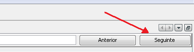

Esta funcionalidade consta de duas partes.
Quando procura por uma palavra, a procura é feita primeiro para determinar quais os ficheiros em que a palavra está presente. Uma vez que a lista de todos os ficheiros que correspondem à procura esteja completa e mostrada, pode procurar em qual dos ficheiros de recursos quiser.
Duas coisas a lembrar: quando procurar uma palavra, tem de ter cuidado com a ortografia e lembrar-se que também pode procurar por correspondência entre maiúsculas e mínusculas. Procurar por "genealogia" não é o mesmo que procurar por "Genealogia", se marcou a caixa que ativa esta opção.
A melhor forma de compreender como funciona é dar um exemplo.
Digamos que está a traduzir de Inglês para Português.
Primeira procura: está a procurar a palavra “Thanks".
Vamos lá. Clique no ícone que representa uma lupa.

Surge uma janela. Quer comparar maiúsculas e minúsculas? Não se esqueça de marcar a caixa “Sensível a maiúsculas e minúsculas", à esquerda em cima na janela.
Escreva a palavra “Thanks”, no campo apropriado e clique em “ Procurar”.
Resultado: uma mensagem diz: “Nenhuma ocorrência de "Thanks" encontrada.”. Estranho, não é? Não, a palavra “Thanks” não existe nos recursos ingleses, é só.
Agora, desmarque a caixa "Sensível a maiúsculas e minúsculas". A palavra "Thanks" está sempre onde a escreveu. Clique em “Procurar” novamente. Bingo, há um ficheiro de recursos onde existe a palavra “thanks”. Qual? A janela dá-lhe essa informação:

E a seguir? Faça duplo clique na linha onde a palavra parece estar presente, ou seja em "AncestrisCore/ancestris.app/src/ancestris/app".
Uma vez feito, verá que o ficheiro surge realçado na janela principal do Trancestris.

Na janela principal, só tem de clicar em “Seguinte” à direita na barra de procura. O Trancestris vai direto à linha que contém a palavra que procura. É mágico! ;-)

Segunda procura: queremos procurar pela palavra “geográfica”, mas em Português.
Clique na lupa na barra de menu principal. Surge uma janela. Escreva a palavra "geográfica" no campo apropriado, marque a caixa "Sensível a maiúsculas e minúsculas", à esquerda, e clique em “Português”. A seguir clique em “Procurar”. O ecrã será este:

Nesta janela pode ver que a palavra que procura, "geográfica" está presente em dois ficheiros de recursos.
Faça duplo clique na primeira linha, que é a primeira ocorrência encontrada, com o nome” AncestrisCore/core/src/genj/gedcom”. Depois, faça o que foi explicado acima. Quer ver o segundo ficheiro com a palavra que procura? Fácil, faça duplo clique na linha “AncestrisExtensions/Geo/src/ancestris/modules/geo".